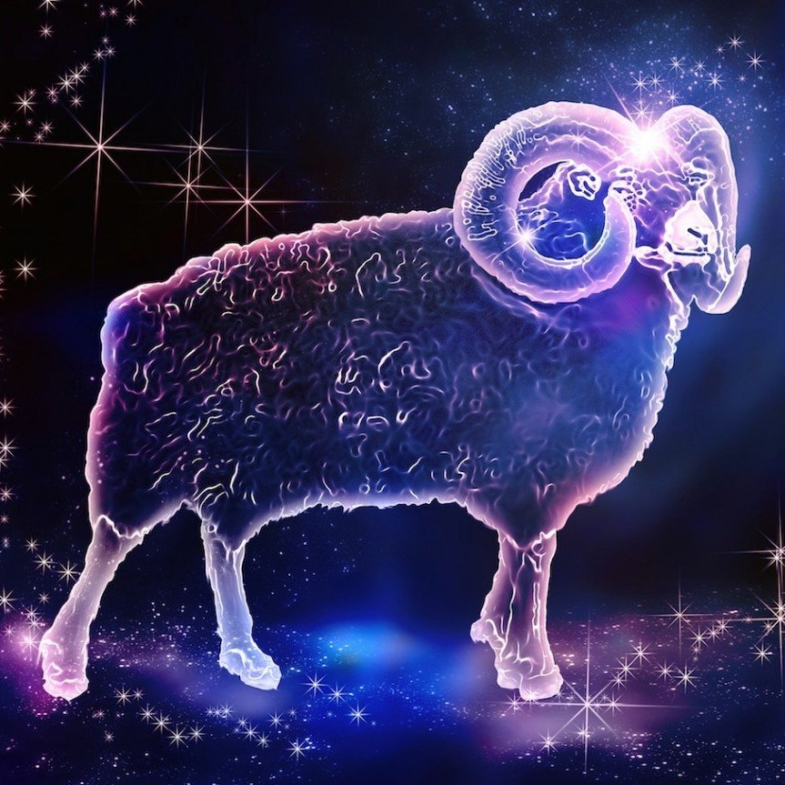
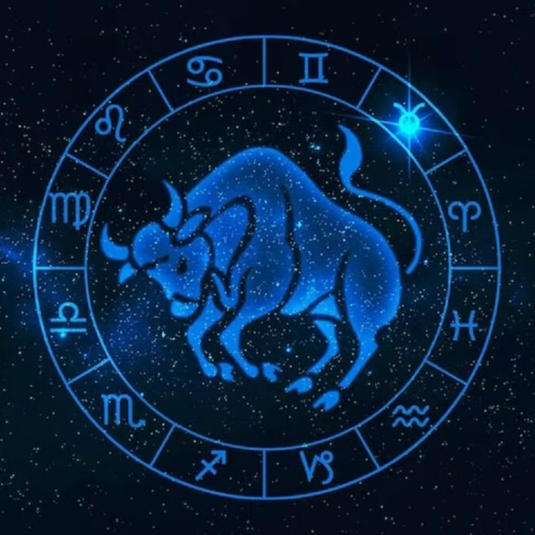
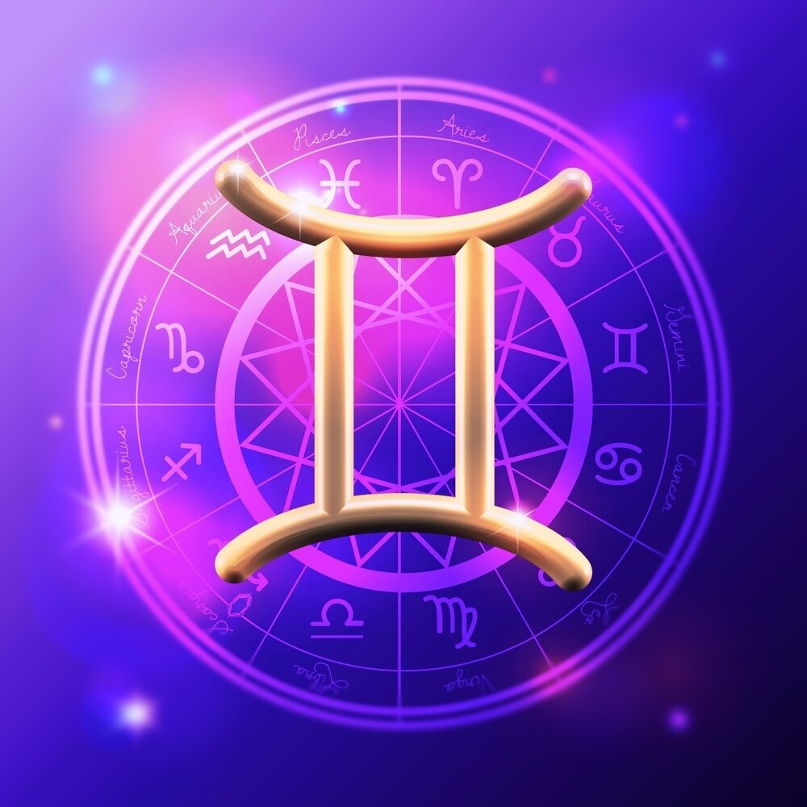
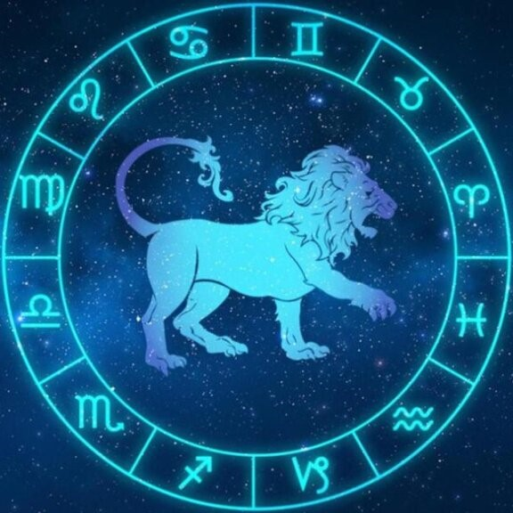
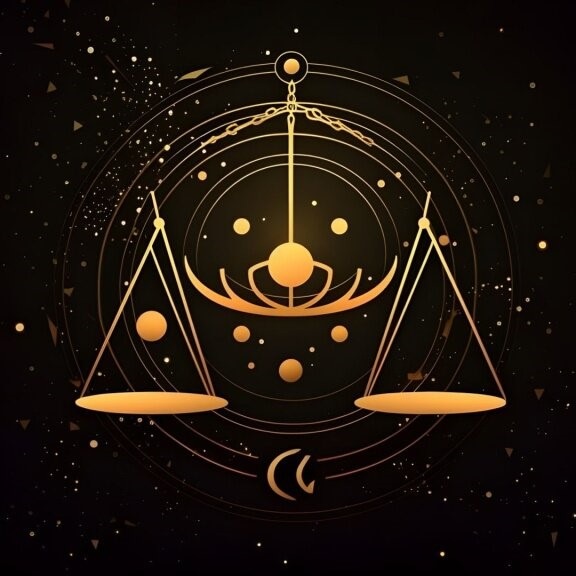
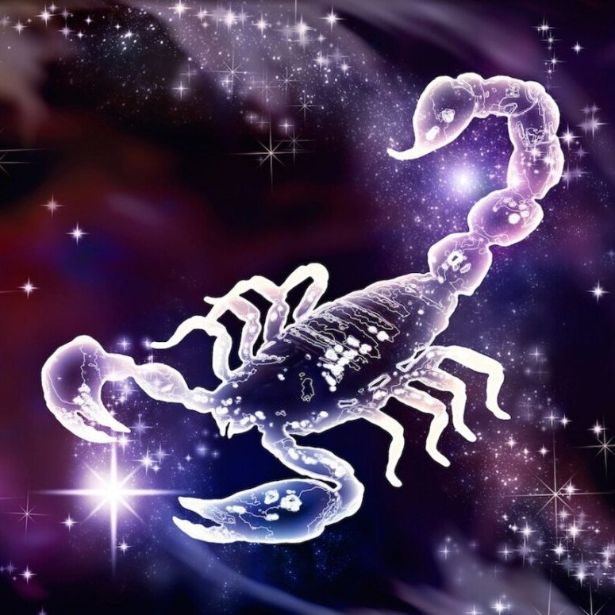
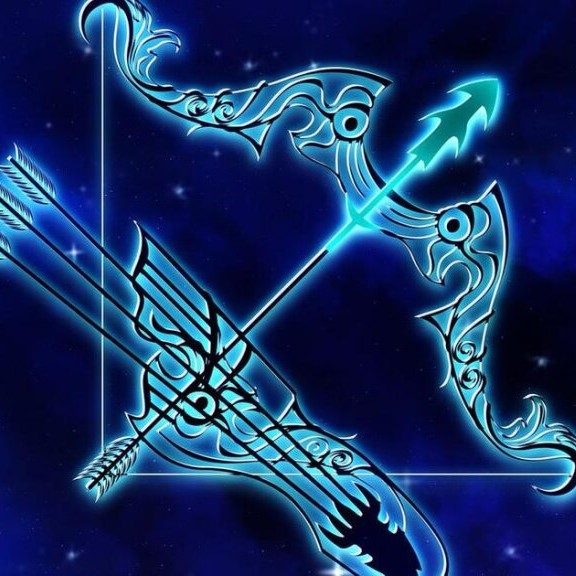
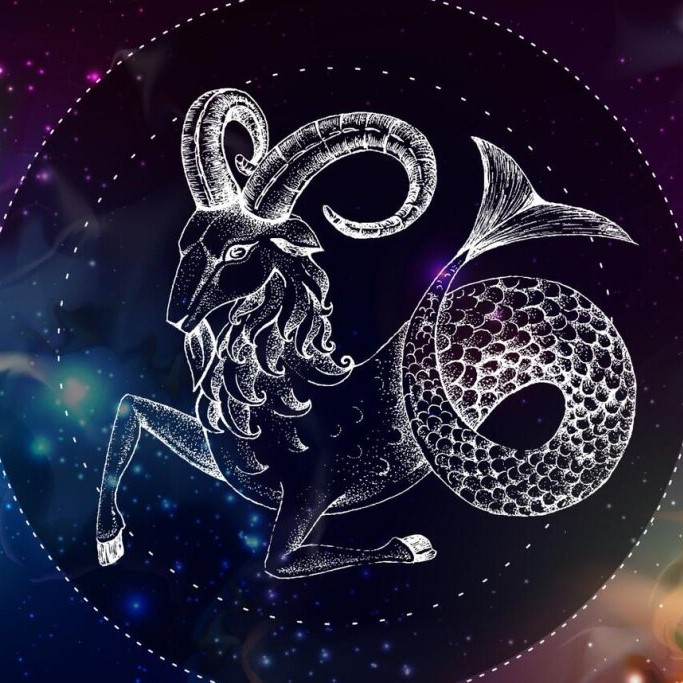
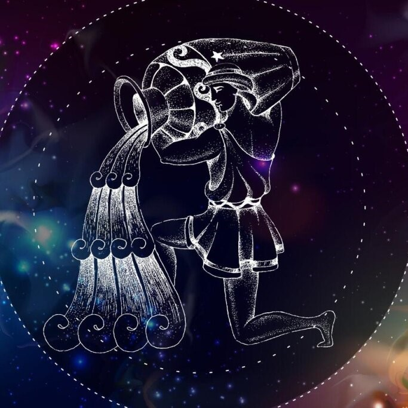
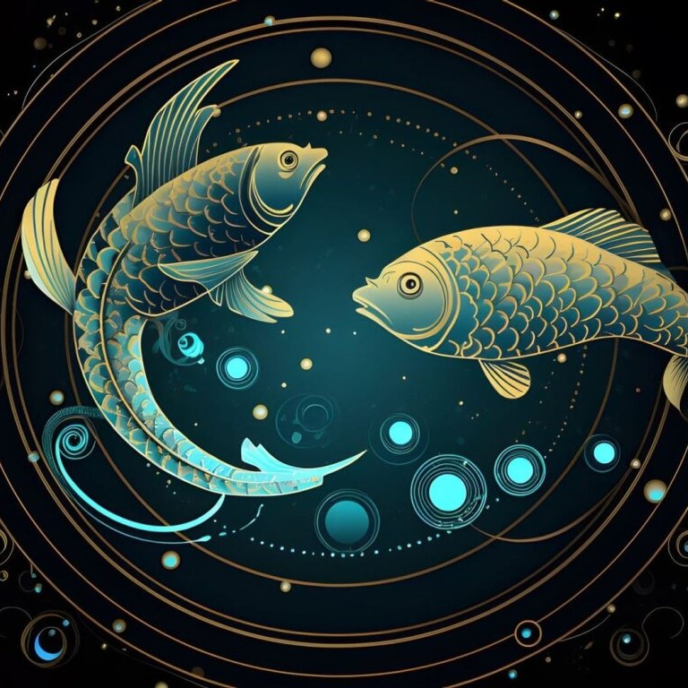

Овен. В 2024 году Овнам предстоит столкнуться с некоторыми испытаниями и преградами на пути к успеху. Однако, благодаря своей решительности и энергии, они смогут преодолеть все трудности и достичь поставленных целей. В личной жизни ожидаются положительные изменения, возможно, новые романтические отношения или укрепление уже существующих.
Телец Для Тельцов 2024 год станет периодом стабильности и роста. Они смогут укрепить свою финансовую позицию и привлечь дополнительный доход. В карьере также ожидаются положительные изменения. В личной жизни Тельцы смогут укрепить свои отношения и создать гармоничную семейную обстановку.
Близнецы. Для Близнецов 2024 год будет наполнен приятными событиями и новыми возможностями. Они смогут расширить свой круг общения и найти новых друзей. В карьере ожидается успех и признание. В личной жизни Близнецы могут встретить свою вторую половинку или укрепить уже существующие отношения.
Рак. 2024 год станет для Раков периодом семейного счастья и гармонии. Возможно, они будут принимать решения, связанные с домом и семьей, и это принесет им радость. В карьере Раки смогут достичь стабильности и успеха. В личной жизни ожидаются теплые и романтические отношения.
Лев. В 2024 году Львы смогут проявить свои лидерские качества и достичь великих результатов. Они смогут привлечь внимание других людей и стать центром внимания. В карьере ожидаются новые возможности и успехи. В личной жизни Львы могут встретить новую любовь или укрепить уже существующие отношения.
Дева. Для Дев в 2024 году ожидаются изменения и новые возможности. Они смогут достичь стабильности в карьере и привлечь внимание высокопоставленных людей. В личной жизни возможны перемены и новые романтические отношения.
Весы. В 2024 году Весы смогут достичь гармонии и баланса во всех сферах жизни. Они смогут принимать справедливые решения и создать гармоничную обстановку вокруг себя. В карьере ожидаются успехи и признание. В личной жизни Весы смогут найти свою половинку или укрепить уже существующие отношения.
Скорпион. 2024 год станет для Скорпионов периодом новых возможностей. Они смогут достичь успеха в карьере и преуспеть во всем, что предпримут. В личной жизни ожидаются положительные перемены и новые романтические отношения.
Стрелец. Для Стрельцов 2024 год будет наполнен новыми возможностями и приключениями. Они смогут расширить свои горизонты и достичь успеха в карьере. В личной жизни ожидаются положительные перемене и новые романтические отношения.
Козерог. В 2024 году Козерогам предстоит преодолеть некоторые преграды на пути к успеху. Однако, благодаря своей настойчивости и упорству, они смогут достичь своих целей. В карьере ожидаются успехи и признание. В личной жизни Козероги смогут создать гармоничные и стабильные отношения.
Водолей В 2024 году Водолеев ожидают положительные перемены и новые возможности. Они смогут привлечь внимание других людей и достичь успеха в карьере. В личной жизни Водолеи могут найти свою вторую половинку или укрепить уже существующие отношения.
Рыбы. Для Рыб 2024 год станет периодом реализации творческих планов и достижения гармонии во всех сферах жизни. Они смогут привлечь удачу и достичь успеха в своих начинаниях. В личной жизни Рыбы ожидаются положительные изменения и новые романтические отношения.
